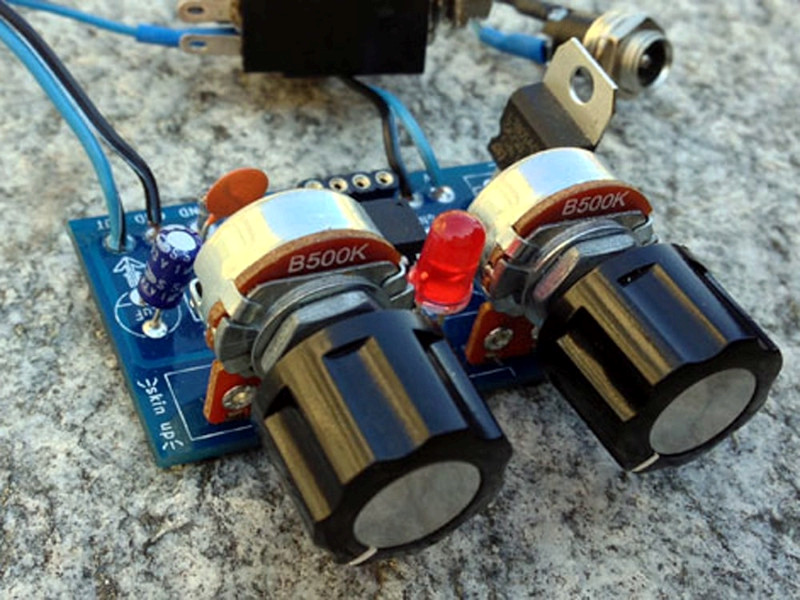
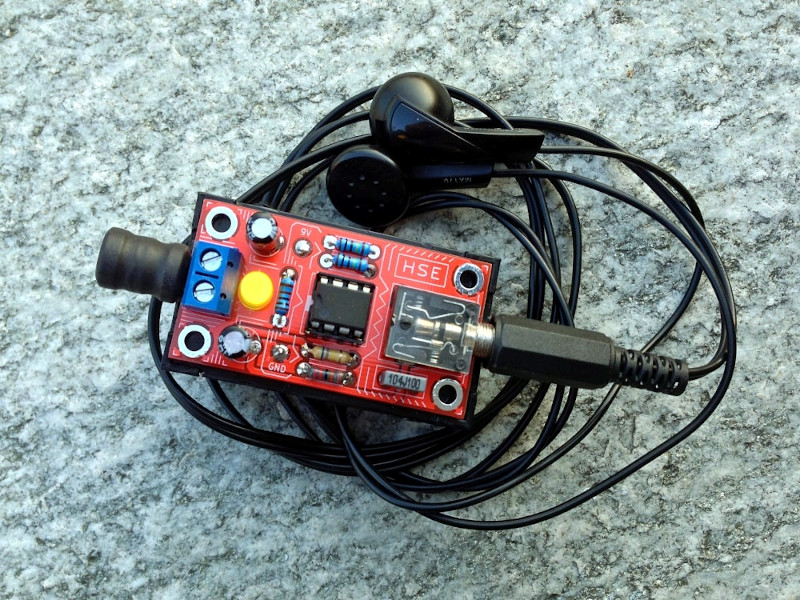
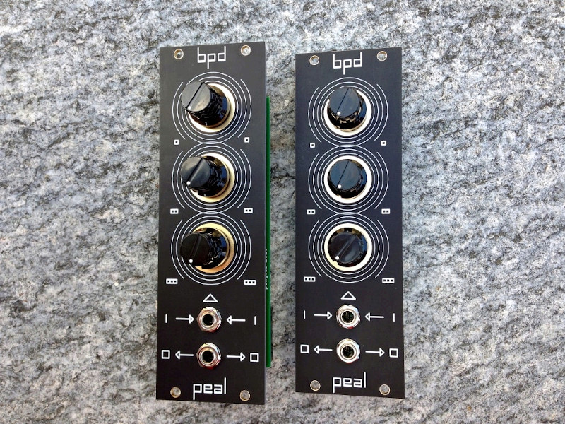
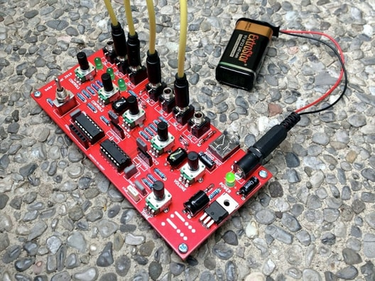

Home
ATtiny multiboard is a board hosting an ATtiny85 MCU and two potentiometers, typically used as a
minimal sound generator.

Hidden sound explorer
is a circuit that allows to amplify small voltages coming from piezo-electric
transducers or from coils.

bpd
is a three oscillators voice for eurorack systems.

bebe
is a two oscillators sound generator with a 5 steps gate sequencer/LFO

Home